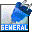
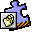

You can also visit our on-line store.
| |
PhotoPress. The easiest way to print your digital photos. PhotoPress runs native under Mac OS X. | Try (BinHex, 6.6M) |
| NewsWatcher-X. A carbonized version of John Norstad's NewsWatcher. NewsWatcher-X runs native under Mac OS X. Free, with source. | Download (BinHex, 384K) Source (BinHex, 732K) |
| |
QTVR Matte. QTVR Matte is a plug-in for Adobe® After Effects which allows you to manipulate Quicktime VR panoramas from within the After Effects Environment. | Try (StuffIt!, 152K) Buy (US $50) |
|  | Color Pal. Color Pal is a plug-in for Adobe® After Effects which adds a floating, customizable, persistent color palette to the application. | Macintosh (MacBinary 132K) Windows (Zip 148K) |
|  | CWProjector. A version control plugin for using MPW Projector with Metrowerks CodeWarrior. | Try (MacBinary, 284K) Buy (US $20) |
| |
CWCVS, a version control plugin plugin for using GNU CVS with Metrowerks CodeWarrior. | Try (MacBinary, 284K) Buy (US $20) |
| Sherlock Plugins. Free Sherlock plugins for Macintosh development and other tasks. |
Home | Services | Products | Consultants | Clients | Corporate | Related | WashTech
This page was last modified on 14 November 2001. This site is maintained by Richard Wesley. Copyright © 1996-2001 by Electric Fish, Inc. All Rights Reserved.